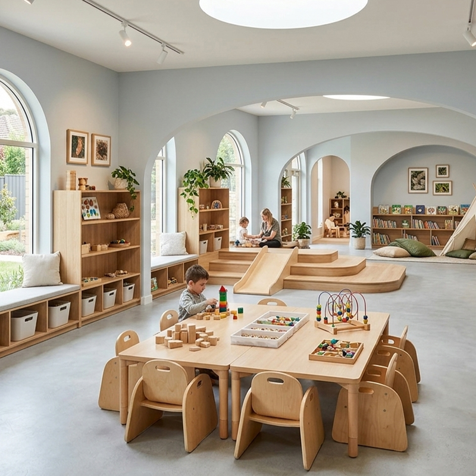
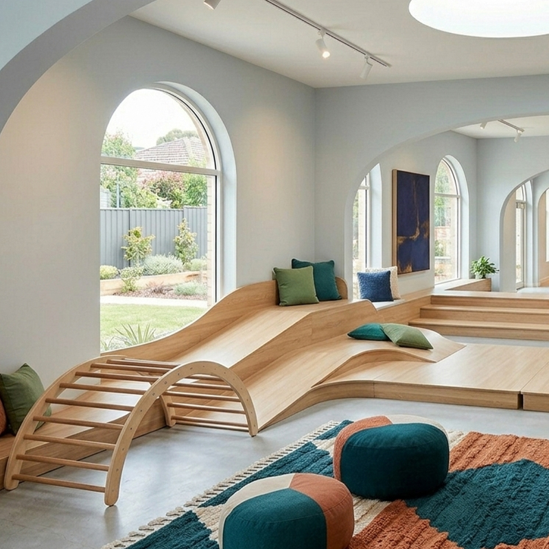
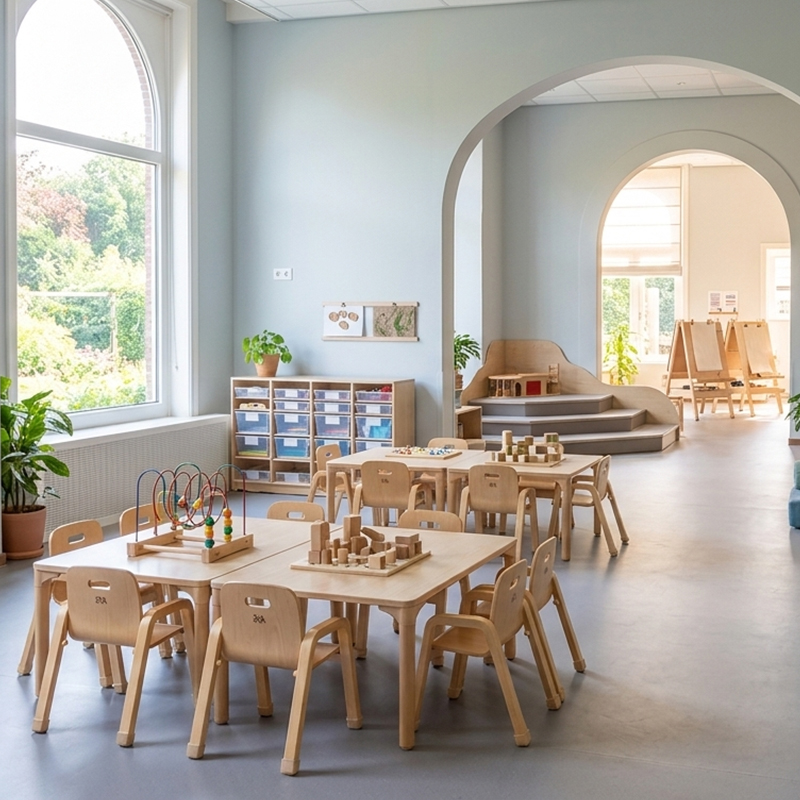
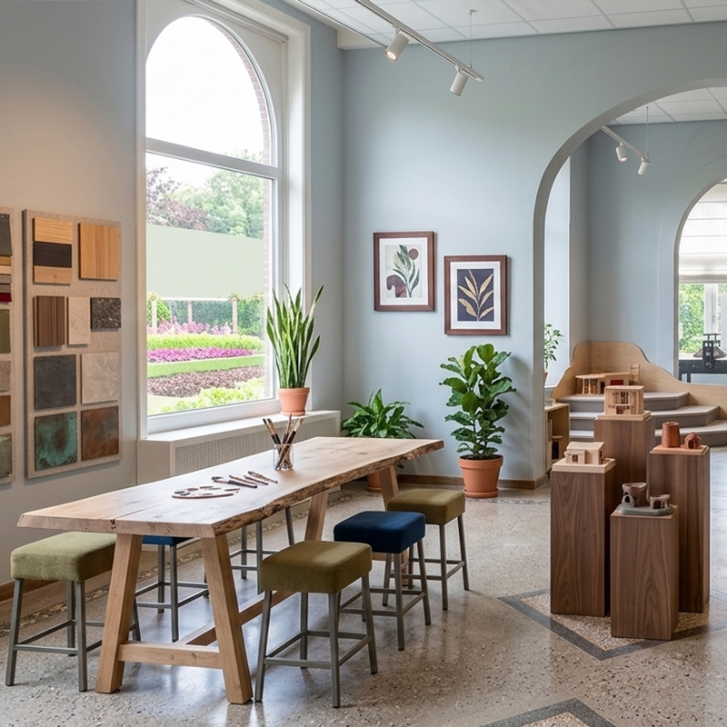

Las estanterías Montessori bajas convierten el cuarto infantil en un espacio donde el niño es protagonista. Colocadas a su altura, permiten que alcance los juguetes y cuentos sin ayuda, fomentando la autonomía y el orden desde pequeño. La madera de abedul con acabados no tóxicos cuida su salud, y el diseño sencillo con líneas limpias se adapta a la estética nórdica o a cualquier estilo de habitación. Una forma sencilla de aplicar la filosofía Montessori en el hogar.
Las estanterías a la altura del niño fomentan su autonomía: elige sus juguetes y cuentos, juega y guarda cada cosa en su sitio sin ayuda de los adultos. El orden se convierte en un hábito natural dentro de su rutina diaria.
El diseño abierto permite al niño ver todo el contenido de un vistazo, evitando la sobreestimulación de los baúles cerrados. Con pocos juguetes expuestos a la vez, el pequeño se concentra mejor en cada actividad.
La madera de abedul con lacado no tóxico crea un ambiente natural y saludable en la habitación. Las superficies lisas se limpian con facilidad y los cantos redondeados protegen al niño durante el juego.
Los módulos se combinan para crear rincones: de lectura con asiento acolchado, de juego simbólico con bandejas de actividades o de dibujo con la mesa a su altura. La colección crece con las necesidades del niño.
El anclaje a la pared incluido garantiza la seguridad del mobiliario con niños pequeños en casa. El montaje es sencillo y el manual ilustrado guía cada paso en menos de 30 minutos.
| Pieza | Madera | Uso | Edad |
|---|---|---|---|
| Estantería abierta baja | Abedul natural | Juguetes y cuentos | 0-3 años |
| Estantería con asiento | Abedul + textil | Rincón de lectura | 2-6 años |
| Mesa con bandejas | Abedul redondeado | Actividades guiadas | 3-6 años |
| Altillo modular | Abedul reforzado | Juego y movimiento | 4-8 años |
| Material | Contrachapado de abedul certificado |
| Acabados | Lacado al agua sin VOC, no tóxico |
| Alturas | 30-60 cm, al alcance del niño |
| Cantos | Redondeados por fresado CNC |
| Seguridad | Anclaje antivuelco incluido |
| Montaje | Manual ilustrado, 30 minutos |
| Garantía | 2 años en estructura |
Habitación infantil Montessori: estantería abierta baja con los juguetes y cuentos favoritos al alcance del niño.
Rincón de lectura en casa: estantería con asiento acolchado y cesto de cuentos para el momento de la lectura antes de dormir.
Zona de juegos del salón: módulos bajos que mantienen el orden de los juguetes sin romper la estética del hogar.
El mobiliario a la altura del niño es útil hasta aproximadamente los 8 años. A partir de esa edad, los niños suelen preferir mesas y estanterías de tamaño adulto, que ofrecemos en la colección de mobiliario escolar de estudio.
No. Basta con adaptar el espacio de juego y lectura con estanterías bajas y pocos juguetes a la vista para notar los beneficios. El resto de la habitación puede mantener muebles convencionales de tamaño adulto.
Los modelos de abedul natural se pueden lacar bajo pedido en el color deseado. Los modelos ya lacados no admiten repintado casero con garantía, por lo que recomendamos elegir el color en el momento del pedido.
Este producto también está disponible en versión profesional para colegios e instituciones: Ver versión escolar →
Reciba información detallada de todos nuestros productos de mobiliario escolar.
📋 Solicitar catálogo